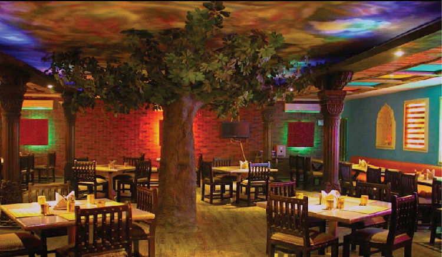
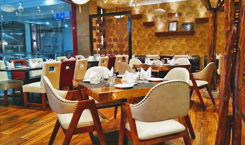
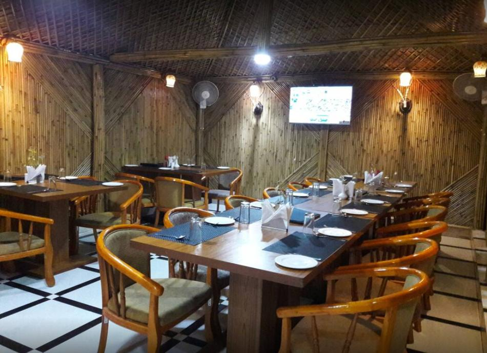
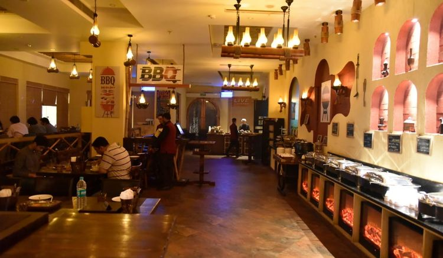
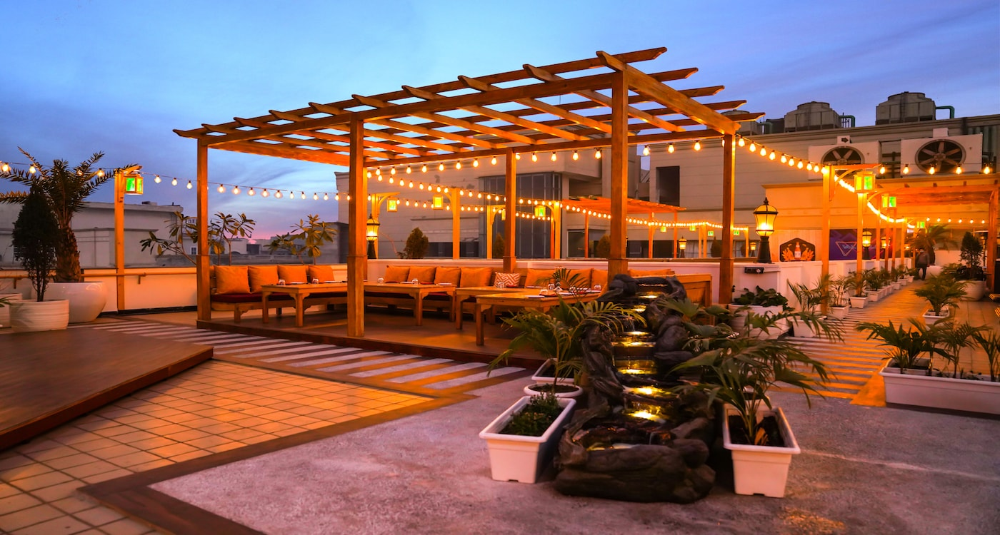

Best Restaurants in Indirapuram
If you're a foodie, you've probably noticed the changes that have occurred in our lovely city. As Indirapuram grows in population, a slew of new restaurants have sprouted throughout the city. Now, not all of them are fine, so don't go to the first one that comes up when you search for "restaurants Indirapuram" on Google! We've compiled a list of the best Indirapuram restaurants to make your job easier. Here are the best among them:
Pind Balluchi Indirapuram

It's not every day that you walk into a restaurant and immediately
recognise that this is a spot you'll return to. That place is Pind
Balluchi. The staff was especially pleasant and courteous, and they
were eager to answer our questions. The decor is simple, but it has a
lot of effect. It would be an understatement to say that the food is
delicious. But, in the end, it's the specific, distinct "vibe" of this
restaurant that sets it apart from other Indirapuram restaurants. It's
impossible to put into sentences, no matter how hard we try (and that
we are). Want to go right now? This is how you go about doing it:
Address: Shop 353, 1st Floor Habitat centre, Block J,
Indirapuram, Ghaziabad, Uttar Pradesh 201014
Phone: 097110 69063
Bercos Indirapuram

Many terms can be used to define Bercos Indirapuram, which is situated
in the Indirapuram Habitat Centre. We've decided to call it an
"experience." You'll immediately notice why Bercos stands out among
the Indirapuram restaurants the moment you walk in. The atmosphere and
interior design are among the most distinctive in the genre. And the
food is simply mouth-watering. No matter if you're a vegetarian or a
non-vegetarian, you'll find enough to satisfy your hunger here. We
have no reservations in declaring that Bercos is the clear leader in
the race for Indirapuram's best restaurant. Here's how to get in touch
with them:
Address: 1st floor, habitat centre, 18, Dr Sushila Naiyar Marg,
Vaibhav Khand, Indirapuram, Ghaziabad, Uttar Pradesh 201010
Desi Kalika Hut Indirapuram

This lovely restaurant, located oposite Jaipuria Sunrise Plaza, is a
foodie's dream come true. It's roomy, and the interior is absolutely
stunning. It also manages to send off a warm and relaxing vibe. It's
as relaxing to eat here as it is to see the sunset. Desi Kalika Hut
has rapidly become one of our favourites, thanks to its diverse menu.
The staff is extremely knowledgeable about the food, and you can
easily customise your orders. You can unwind and enjoy your meal here
while watching the world outside the glass doors go by at breakneck
speed. Here's what you need to know to get there:
Address: Plot No 74, Ahinsa Khand-2, Opp. Jaipuria Sunrise
Plaza, Indirapuram, Ghaziabad, Uttar Pradesh 201010
Phone: 0120
433 3334
Barbeque Village Indirapuram

If you love good food, you would definitely love Barbeque Village. Our
group had a great time trying out this restaurant. The atmosphere,
which is one of our (and we're sure your) top considerations when
rating a restaurant, is simply outstanding. The non-vegetarian fare is
incredible, and we give it our seal of approval. The staff is
pleasant, and the wait time is comparable to, if not better than, that
of other cafes; there is no excuse not to visit this establishment. We
have no doubt that Barbeque Village is one of the best Indirapuram
restaurants, given the large number of restaurants we visited for the
purposes of this list. Here's what you need to know:
Address: A-B Block, 2nd floor, Indirapuram Habitat Centre,
Ghaziabad, Uttar Pradesh 201010
Phone: 088003 03303
Noon Mirch Indirapuram

In our opinion (and they are the only ones that really matter), Noon
Mirch is one place that you should definitely check out if you have
the time. Located at D Mall, Noon Mirch has everything you might want
in a restaurant. Fantastic food? Yes. Staff members who are willing to
help? Yes. A stunning, but understated aesthetic ambiance? Yes. What
else do you ask for? Our team had a great time in that place. And
we're confident that if you go with your mates, you'll have a similar
experience. And, as a bonus tip from us, make sure to order their
drinks. They're fantastic. Are you excited to visit Noon Mirch? Here's
how to get in touch with them:
Address: 3rd Floor, D Mall, Indirapuram, Ghaziabad, Uttar
Pradesh 201014
Phone: 089292 07545
So, that was it! Now you know what are the best restaurants in Indirapuram. Liked it? Great! Check our other articles here. And if you think someone needs this information, don’t hesitate to share this page on WhatsApp, Facebook or even through word-of-mouth.